ILUSTRAÇÃO
elemento simbólico 1
elemento simbólico 1
A barraca
Há séculos, uma barraca de origem desconhecida desperta a curiosidade de viajantes em busca de respostas sobre o próprio destino
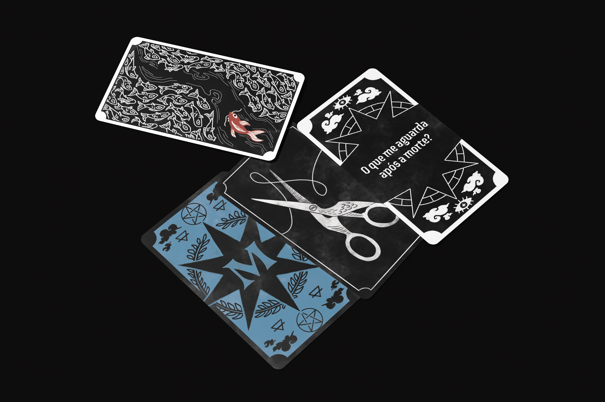
Jogo de cartas narrativo
Entre na barraca das deusas do destino e encare seu futuro...
01 — O jogo
Um jogo de cartas inspirado em videntes
Videns é um jogo de cartas de narrativa aberta: um jogador é o viajante em busca do seu destino, e os outros são as deusas que leem seu futuro por meio da combinação de cartas.
As cartas oferecem pistas, símbolos e possibilidades de futuro, mas nunca a história pronta. Cabe a quem joga interpretar, conectar e decidir qual versão do destino é mais convincente, seja pela razão ou pela vontade de acreditar.
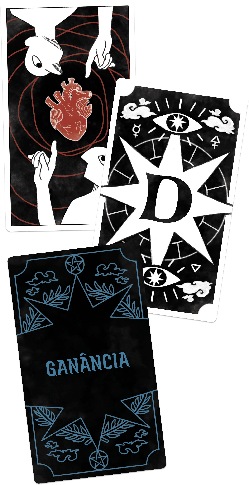
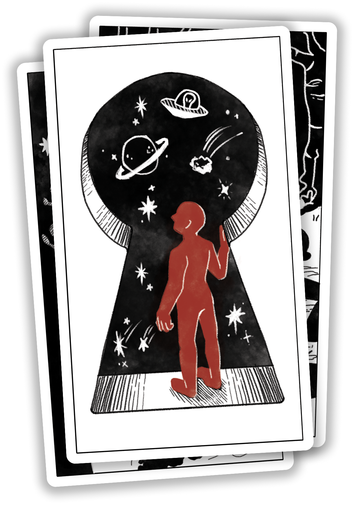
Shakespeare, Hamlet
A realidade vai além da nossa compreensão, existem mistérios e possibilidades que a razão humana não consegue explicar...
02 — Universo
"Durante séculos, viajantes de todos os tipos relataram ter visto uma barraca cuja origem ninguém soube explicar. Ela traz uma sensação de mistério e perigo, mas algo atrai quem passa por perto. Mesmo sem saber o que é, quem entra reconhece na hora: está diante das deusas do destino..."
Há séculos, uma barraca de origem desconhecida desperta a curiosidade de viajantes em busca de respostas sobre o próprio destino
Entre símbolos e interpretações, as videntes revelam possibilidades sobre os caminhos que aguardam cada viajante.
O futuro está escrito ou pode ser reinventado? Cada consulta abre espaço para histórias e destinos únicos.
03 — Como jogar
Conheça os componentes que dão vida a Videns e descubra como suas regras transformam combinações de cartas em narrativas únicas
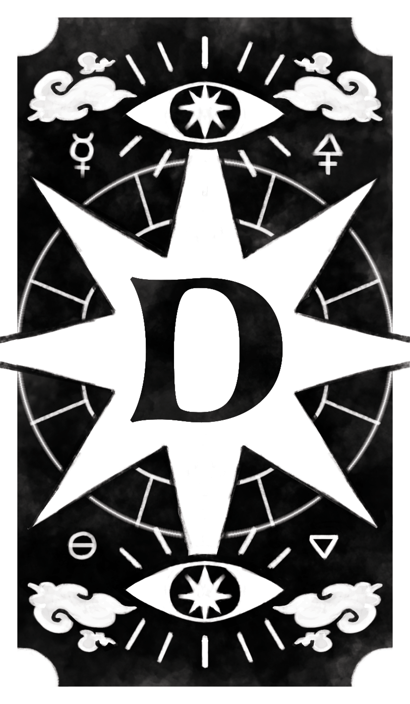
Contextos que apresentam as questões e os caminhos dos viajantes.
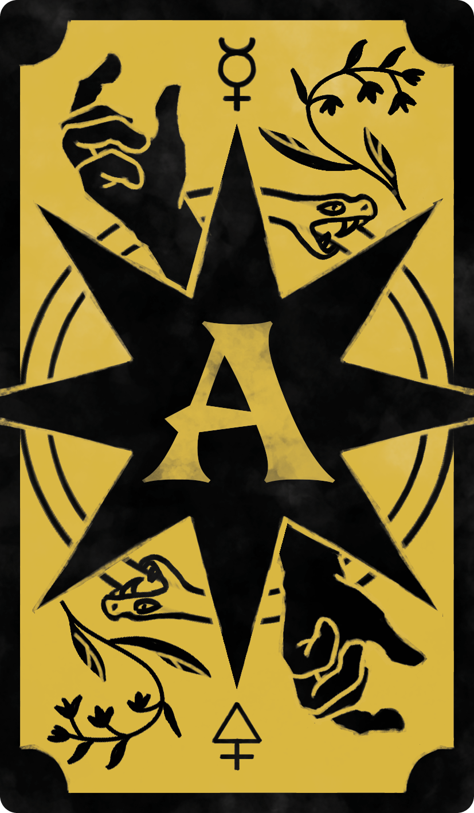
Verbos que orientam as ações e dão movimento às interpretações.
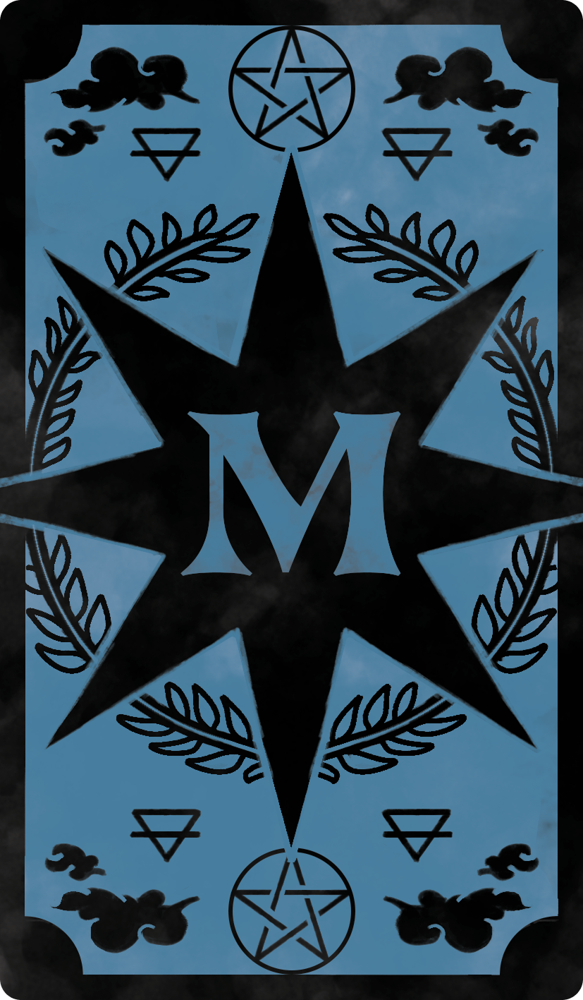
Substantivos que dão forma e significado às previsões.
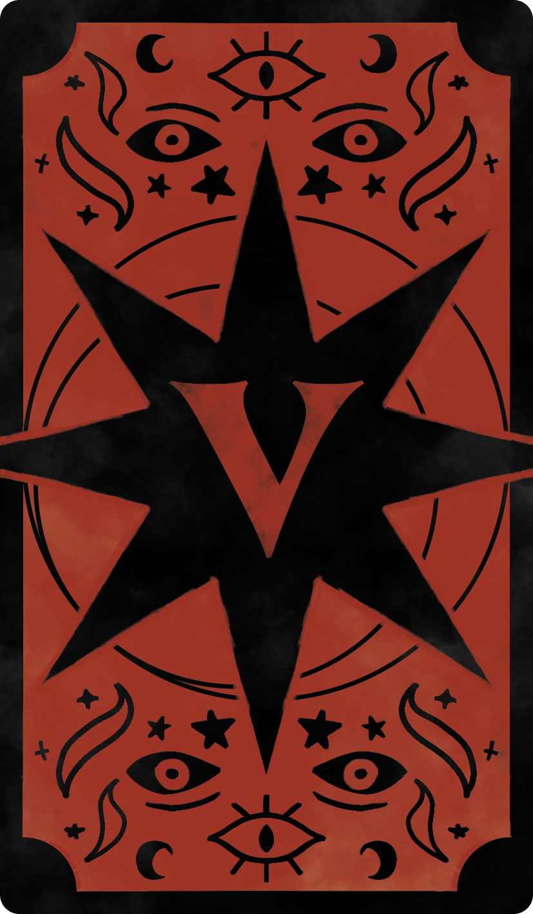
Imagens simbólicas que despertam interpretações e inspiram as previsões das videntes.
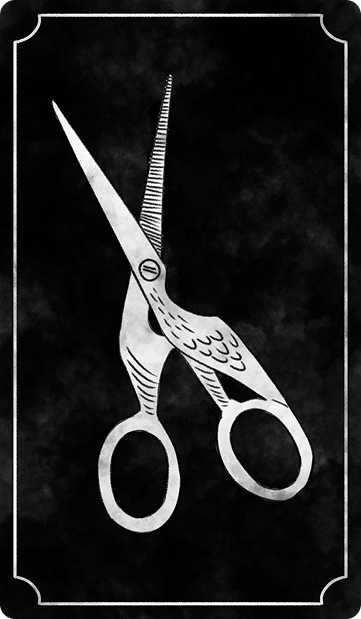
Presentes oferecidos às videntes como agradecimento e símbolo das esperanças dos viajantes.
O viajante se introduz e revela o que deseja saber
Cada deusa revela sua profecia baseada na combinação de suas cartas
As deusas podem fortalecer suas próprias leituras ou questionar as das outras
Cabe ao viajante decidir qual história foi a mais convincente, emocionante ou engraçada
Uma possível interpretação: Cultive seus relacionamentos profissionais e invista em novas conexões. Assim como uma planta precisa de cuidado para crescer, sua rede de contatos pode abrir caminhos para novas oportunidades.
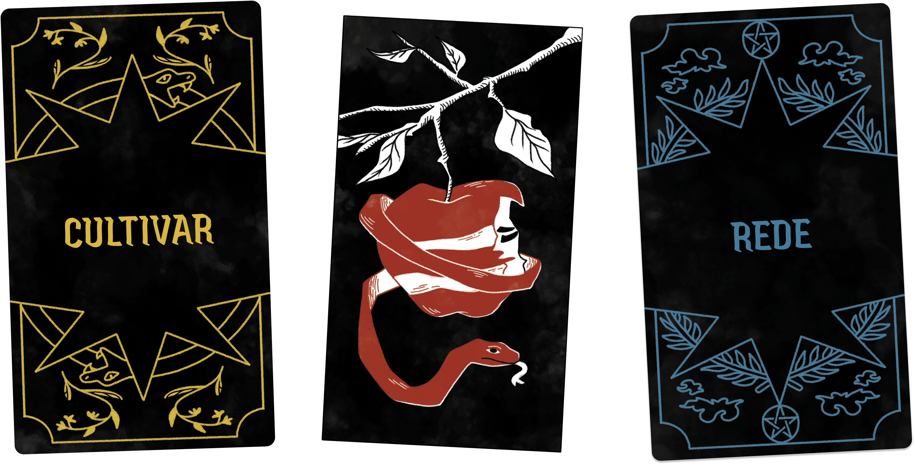
04 — Por trás das cortinas
Explore o processo criativo de desenvolvimento e as decisões que deram forma ao jogo
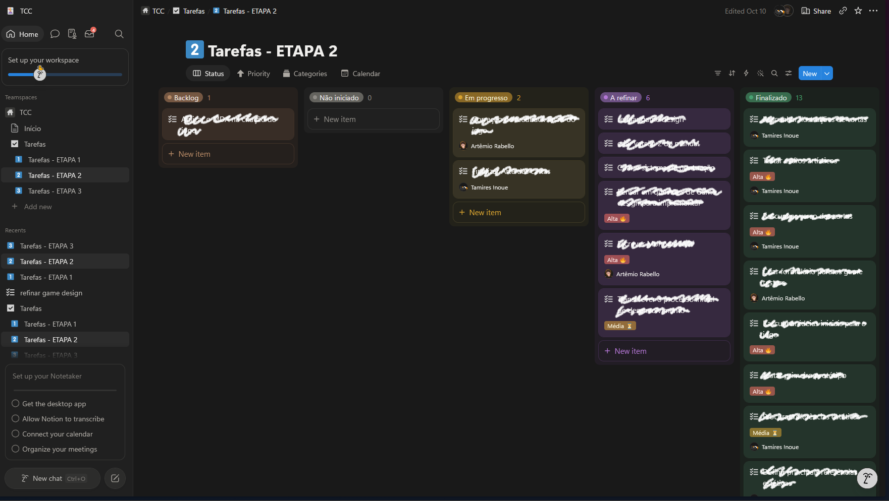
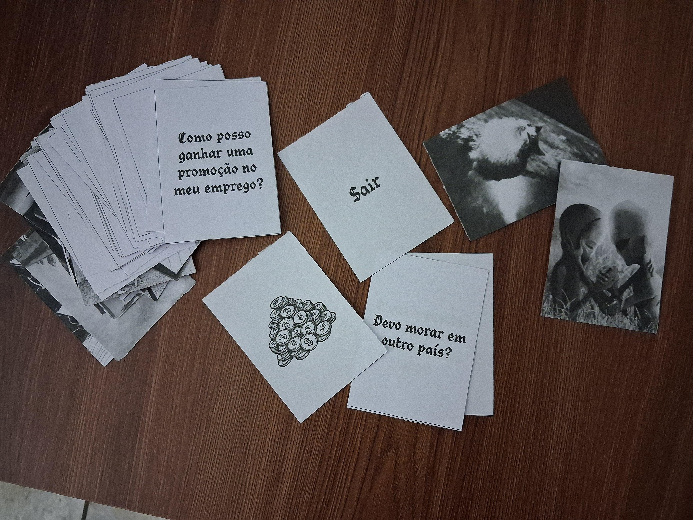

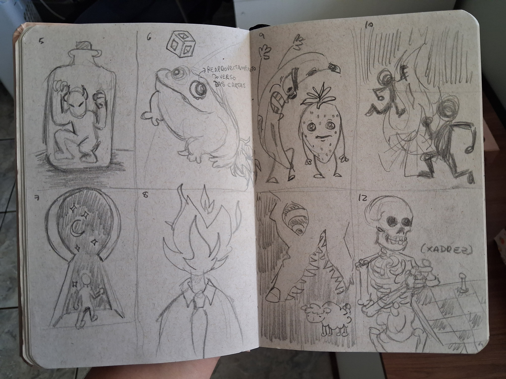
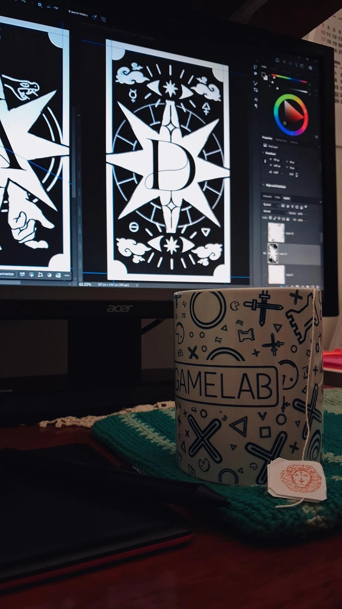
A identidade visual das cartas passou por diferentes etapas de experimentação, começando com rascunhos e estudos de composição. A primeira versão digital seguia um estilo próximo de doodles, com traços descontraídos e simplificados.
Após refinamentos, a linguagem visual evoluiu para uma releitura moderna do medieval woodcut. A estética combina referências de antigas gravuras e ilustrações esotéricas com símbolos do tarot Rider-Waite-Smith, reforçando a atmosfera mística de Videns.
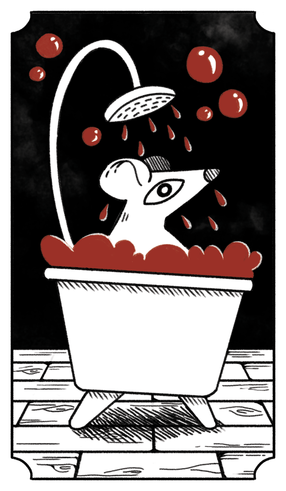
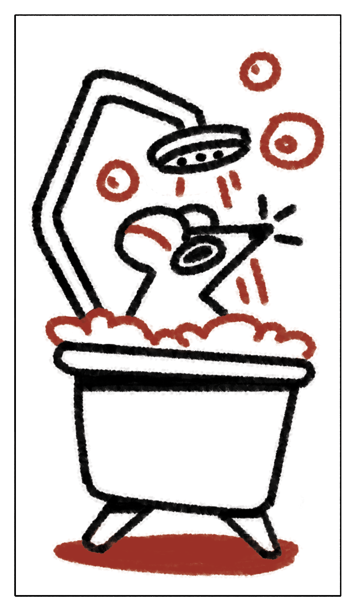
05 — Sobre o projeto
Questão de pesquisa
Como o game designer pode guiar a experiência de um jogo aberto por meio das regras, sem determinar o resultado e preservando a liberdade criativa de quem joga?
Videns é o produto prático de um TCC de Design Digital que investiga o papel do game designer em jogos abertos. O jogo é, ao mesmo tempo, produto e objeto de estudo: cada regra foi pensada para orientar a experiência sem fechar a história.
O desenvolvimento foi orientado pelo MDA Framework, proposto por Robin Hunicke, Marc LeBlanc e Robert Zubek (2004), que relaciona mecânicas, dinâmicas e estéticas na construção da experiência de jogo. A partir dele, foram feitos protótipos e realizados playtests, permitindo observar as interações dos jogadores e refinar as regras até chegar à versão final.
FACAMP · Design Digital · 4°ano
Ler o trabalho completo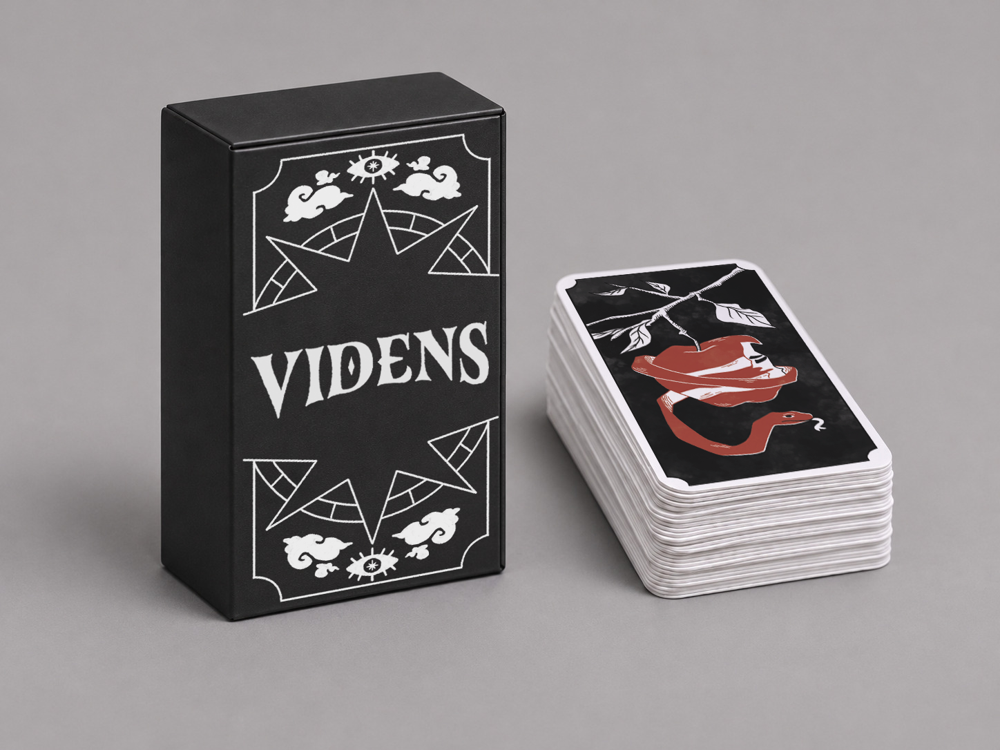
06 — Leve para a mesa
Leve Videns para casa e descubra os caminhos que suas cartas podem revelar
R$ ?? Em breve
Comprar o jogo